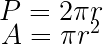
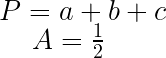
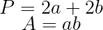
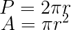
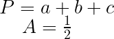
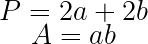
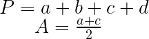
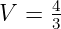
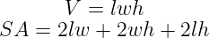
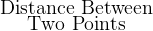

P=2\pi r " class="pic-halign" /> TRIANGLEbach
 P=a+b+c
" class="pic-halign" />
RECTANGLEab
P=a+b+c
" class="pic-halign" />
RECTANGLEab
P=2a+2b " class="pic-halign" /> TRAPEZOIDabcdh
P=a+b+c+d " class="pic-halign" />
Formula Sheet
P=2\pi r " class="pic-halign" /> TRIANGLEbach
P=a+b+c
" class="pic-halign" />
RECTANGLEab
P=2a+2b " class="pic-halign" /> TRAPEZOIDabcdh
P=a+b+c+d " class="pic-halign" />
VOLUMES AND SURFACE AREAS
SPHERE
 V=\frac {4}{3}\pi r^3
" class="pic-halign" />CYLINDER
V=\frac {4}{3}\pi r^3
" class="pic-halign" />CYLINDER
V=\pi r^2h " class="pic-halign" />
RECTANGULAR BOX
 V=lwh
" class="pic-halign" />CUBE
V=lwh
" class="pic-halign" />CUBE
V=a^3 " class="pic-halign" />
PYRAMID
V=\frac {1}{3}Bh " class="pic-halign" />CONE
B= \pi r^2 " class="pic-halign" />
Pythagorean Theorem
D=
Trig Functions of Some Special Angles
Famous Trig Identities
,
,